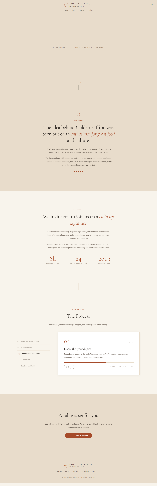
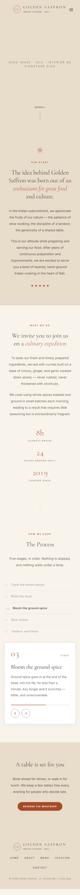
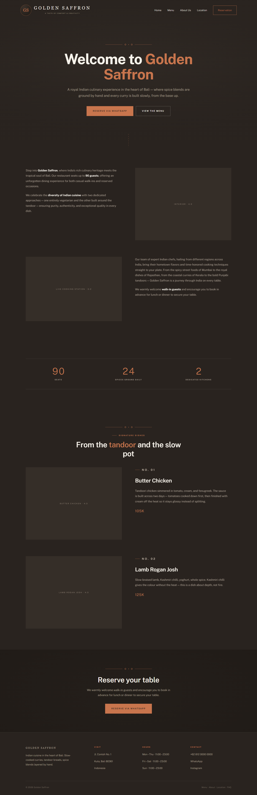
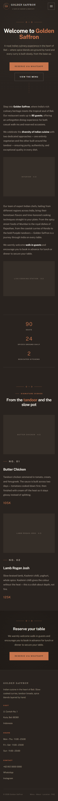
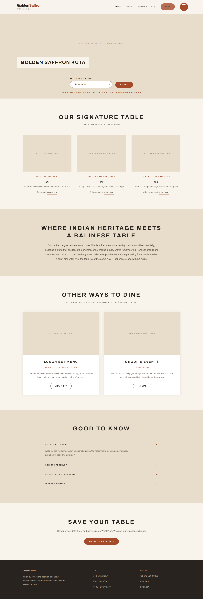
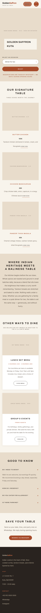

Mockup v3 — Replika Kompetitor
Ketiga halaman di bawah adalah replika struktur dari situs yang Anda tunjuk, memakai palet terracotta pilihan Anda dan konten Golden Saffron. Yang berbeda hanya struktur, tipografi, dan kepadatan — warnanya identik.
Replika dari riceysilo.com/about


Replika dari darbarbali.com


Replika dari dimt.co.uk/restaurants

